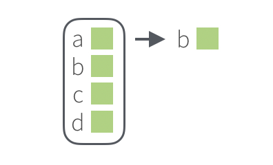
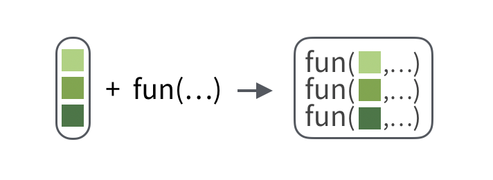
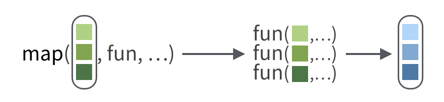

5 Transform Lists and Vectors
This chapter includes the following recipes:
What you should know before you begin
A vector is a one dimensional array of elements. Vectors are the basic building blocks of R. Almost all data in R is stored in a vector, or even a vector of vectors.
A list is a recursive vector: a vector that can contain another vector or list in each of its elements.
Lists are one of the most flexible data structures in R. As a result, they are used as a general purpose glue to hold objects together. You will find lists disguised as model objects, data frames, list-columns within data frames, and more.
Data frames are a sub-type of list. Each column of a data frame is an element of the list that the data frame is built around.
More than any other part of R, lists demonstrate how a programming language can appear different to beginners than to experts. Seasoned R programmers do not distinguish between lists and vectors because the two are equivalent: a list is a type of vector.
However, a beginner who uses R for data science will quickly see that lists behave differently than other types of vectors. First, many R functions will not accept lists as input, even though they accept other types of vectors. Second, when you subset a list with [ ] to extract the value of one of its elements, R will give you a new list of length one that contains the value as its first element. This poses a problem if you want to pass that value to a function that does not accept lists as input (solve that problem with this recipe).
To respect this difference, I try to be clear when talking about vectors that are not lists. This introduces a new problem: when you speak about R, it is difficult to distinguish between vectors that are lists and vectors that are not lists. Whenever the difference matters, I’ll call the first set of vectors lists and the second set of vectors data vectors2. I’ll refer to the superset that includes both lists and data vectors as vectors.
Data vectors come in six atomic types: double, integer logical, character, complex, and raw. Every element in a data vector must be the same type of data as the vector (if you try to put a different type of data into an atomic vector, R will coerce the data’s type to match the vector). R also contains an S3 class system that builds classes like factors and date-times on top of the atomic types. You don’t need to understand R’s types and classes to use R or this cookbook, but you should know that R will recognize different types of data and treat them accordingly.
This chapter focuses on both lists and data vectors, but it only features recipes that work with the structure of a list or data vector. The chapters that follow will contain recipes that work with the types of data stored in a data vector.5.1 Extract an element from a list
You want to return the value of an element of a list as it is, perhaps to use in a function. You do not want the value to come embedded in a list of length one.

Solution
# returns the element named x in state.center
state.center %>%
pluck("x")## [1] -86.7509 -127.2500 -111.6250 -92.2992 -119.7730 -105.5130 -72.3573 ## [8] -74.9841 -81.6850 -83.3736 -126.2500 -113.9300 -89.3776 -86.0808 ## [15] -93.3714 -98.1156 -84.7674 -92.2724 -68.9801 -76.6459 -71.5800 ## [22] -84.6870 -94.6043 -89.8065 -92.5137 -109.3200 -99.5898 -116.8510 ## [29] -71.3924 -74.2336 -105.9420 -75.1449 -78.4686 -100.0990 -82.5963 ## [36] -97.1239 -120.0680 -77.4500 -71.1244 -80.5056 -99.7238 -86.4560 ## [43] -98.7857 -111.3300 -72.5450 -78.2005 -119.7460 -80.6665 -89.9941 ## [50] -107.2560
Discussion
pluck() comes in the purrr package and does the equivalent of [[ subsetting. If you pass pluck() a character string, pluck() will return the element whose name matches the string. If you pass pluck() an integer n, pluck() will return the nth element of the list.
Pass multiple arguments to pluck() to subset multiple times. pluck() will subset the result of each argument with the argument that follows, e.g.
library(repurrrsive)
sw_films %>%
pluck(7, "title")## [1] "The Force Awakens"
5.2 Determine the type of a vector
You want to know the type of a vector.
Solution
typeof(letters)## [1] "character"
Discussion
R vectors can be one of six atomic types, or a list. typeof() provides a useful way to check which type of vector you are working with. This is useful, for example, when you want to match a function’s output to an appropriate map function (below).
5.3 Map a function to each element of a vector
You want to apply a function separately to each element in a vector and then combine the results into a single object. This is similar to what you might do with a for loop, or with the apply family of functions.

For example, got_chars is a list of 30 sublists. You want to compute the length() of each sublist.
Solution
library(repurrrsive)
got_chars %>%
map(length)## [[1]] ## [1] 18 ## ## [[2]] ## [1] 18 ## ## [[3]] ## [1] 18 ## ## [[4]] ## [1] 18 ## ## [[5]] ## [1] 18 ## ## [[6]] ## [1] 18 ## ## [[7]] ## [1] 18 ## ## [[8]] ## [1] 18 ## ## [[9]] ## [1] 18 ## ## [[10]] ## [1] 18 ## ## [[11]] ## [1] 18 ## ## [[12]] ## [1] 18 ## ## [[13]] ## [1] 18 ## ## [[14]] ## [1] 18 ## ## [[15]] ## [1] 18 ## ## [[16]] ## [1] 18 ## ## [[17]] ## [1] 18 ## ## [[18]] ## [1] 18 ## ## [[19]] ## [1] 18 ## ## [[20]] ## [1] 18 ## ## [[21]] ## [1] 18 ## ## [[22]] ## [1] 18 ## ## [[23]] ## [1] 18 ## ## [[24]] ## [1] 18 ## ## [[25]] ## [1] 18 ## ## [[26]] ## [1] 18 ## ## [[27]] ## [1] 18 ## ## [[28]] ## [1] 18 ## ## [[29]] ## [1] 18 ## ## [[30]] ## [1] 18
Discussion
map() takes a vector to iterate over (here supplied by the pipe) followed by a function to apply to each element of the vector, followed by any arguments to pass to the function when it is applied to the vector.

Pass the function name to map() without quotes and without parentheses. map() will pass each element of the vector one at a time to the first argument of the function.
If your function requires additional arguments to do its job, pass the arguments to map(). map() will forward these arguments in order, with their names, to the function when map() runs the function.
got_chars %>%
map(keep, is.numeric)## [[1]] ## [[1]]$id ## [1] 1022 ## ## ## [[2]] ## [[2]]$id ## [1] 1052 ## ## ## [[3]] ## [[3]]$id ## [1] 1074 ## ## ## [[4]] ## [[4]]$id ## [1] 1109 ## ## ## [[5]] ## [[5]]$id ## [1] 1166 ## ## ## [[6]] ## [[6]]$id ## [1] 1267 ## ## ## [[7]] ## [[7]]$id ## [1] 1295 ## ## ## [[8]] ## [[8]]$id ## [1] 130 ## ## ## [[9]] ## [[9]]$id ## [1] 1303 ## ## ## [[10]] ## [[10]]$id ## [1] 1319 ## ## ## [[11]] ## [[11]]$id ## [1] 148 ## ## ## [[12]] ## [[12]]$id ## [1] 149 ## ## ## [[13]] ## [[13]]$id ## [1] 150 ## ## ## [[14]] ## [[14]]$id ## [1] 168 ## ## ## [[15]] ## [[15]]$id ## [1] 2066 ## ## ## [[16]] ## [[16]]$id ## [1] 208 ## ## ## [[17]] ## [[17]]$id ## [1] 216 ## ## ## [[18]] ## [[18]]$id ## [1] 232 ## ## ## [[19]] ## [[19]]$id ## [1] 238 ## ## ## [[20]] ## [[20]]$id ## [1] 339 ## ## ## [[21]] ## [[21]]$id ## [1] 529 ## ## ## [[22]] ## [[22]]$id ## [1] 576 ## ## ## [[23]] ## [[23]]$id ## [1] 583 ## ## ## [[24]] ## [[24]]$id ## [1] 60 ## ## ## [[25]] ## [[25]]$id ## [1] 605 ## ## ## [[26]] ## [[26]]$id ## [1] 743 ## ## ## [[27]] ## [[27]]$id ## [1] 751 ## ## ## [[28]] ## [[28]]$id ## [1] 844 ## ## ## [[29]] ## [[29]]$id ## [1] 954 ## ## ## [[30]] ## [[30]]$id ## [1] 957
5.3.0.0.1 The map family of functions
map() is one of ten similar functions provided by the purrr package that together form a family of functions. Each member of the map family applies a function to a vector in the same iterative way; but each member returns the results in a different type of data structure.
| Function | Returns |
|---|---|
map |
A list |
map_chr |
A character vector |
map_dbl |
A double (numeric) vector |
map_df |
A data frame (map_df does the equivalent of map_dfr) |
map_dfr |
A single data frame made by row-binding the individual results3 |
map_dfc |
A single data frame made by column-binding the individual results4 |
map_int |
An integer vector |
map_lgl |
A logical vector |
walk |
The original input (returned invisibly) |
5.3.0.1 How to choose a map function
To map a function over a vector, consider what type of output the function will produce. Then pick the map function that returns that type of output. This is a general rule that will return sensible results.
For example, the length() function returns an integer, so you would map length() over got_chars with map_int(), which returns the results as an integer vector.
got_chars %>%
map_int(length)## [1] 18 18 18 18 18 18 18 18 18 18 18 18 18 18 18 18 18 18 18 18 18 18 18 ## [24] 18 18 18 18 18 18 18
walk() returns the original vector invisibly (so you can pipe the result to a new function). walk() is intended to be used with functions like plot() or print(), which execute side effects but do not return an object to pass on.
5.3.0.1.1 Map shorthand syntax
Map functions recognize two syntax shorthands.
If your vector is a list of sublists, you can extract elements from the sublists by name or position, e.g.
got_chars %>% map_chr("name")## [1] "Theon Greyjoy" "Tyrion Lannister" "Victarion Greyjoy" ## [4] "Will" "Areo Hotah" "Chett" ## [7] "Cressen" "Arianne Martell" "Daenerys Targaryen" ## [10] "Davos Seaworth" "Arya Stark" "Arys Oakheart" ## [13] "Asha Greyjoy" "Barristan Selmy" "Varamyr" ## [16] "Brandon Stark" "Brienne of Tarth" "Catelyn Stark" ## [19] "Cersei Lannister" "Eddard Stark" "Jaime Lannister" ## [22] "Jon Connington" "Jon Snow" "Aeron Greyjoy" ## [25] "Kevan Lannister" "Melisandre" "Merrett Frey" ## [28] "Quentyn Martell" "Samwell Tarly" "Sansa Stark"
got_chars %>% map_chr(3)## [1] "Theon Greyjoy" "Tyrion Lannister" "Victarion Greyjoy" ## [4] "Will" "Areo Hotah" "Chett" ## [7] "Cressen" "Arianne Martell" "Daenerys Targaryen" ## [10] "Davos Seaworth" "Arya Stark" "Arys Oakheart" ## [13] "Asha Greyjoy" "Barristan Selmy" "Varamyr" ## [16] "Brandon Stark" "Brienne of Tarth" "Catelyn Stark" ## [19] "Cersei Lannister" "Eddard Stark" "Jaime Lannister" ## [22] "Jon Connington" "Jon Snow" "Aeron Greyjoy" ## [25] "Kevan Lannister" "Melisandre" "Merrett Frey" ## [28] "Quentyn Martell" "Samwell Tarly" "Sansa Stark"
These do the equivalent of
got_chars %>% map_chr(pluck, "name") got_chars %>% map_chr(pluck, 3)You can use
~and.xto map with expressions instead of functions. To turn a pice of code into an expression to map, first place a~at the start of the code. Then use.xas a pronoun for the value that map should supply from the vector to map over. The map function will iteratively pass each element of your vector to the.xin the expression and then run the expression.An expression like this:
got_chars %>% map_lgl(~length(.x) > 0)becomes the equivalent of
got_chars %>% map_lgl(function(x) length(x) > 0)Expressions provide an easy way to map over a function argument that is not the first.
if you’re an R afficianado, data vectors include both atomic vectors and the S3 classes built upon them, like factors and dates and times↩
These results should themselves be data frames. In other words, the function that is mapped should return a data frame.↩
These results should themselves be data frames. In other words, the function that is mapped should return a data frame.↩